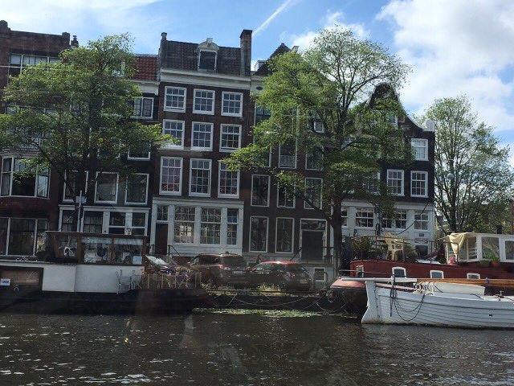

Amsterdam je glavni grad Nizozemske te je smješten na ušću rijeke Amsel te se veliki dio grada nalazi na kanalima te je jedna od turističkih atrakcija vožnja brodom. Drugo sredstvo prijevoza po kojem je Amsterdam, a i cijela Nizozemska poznata, je vožnja biciklom te se mogu primijetiti i garaže za bicikle koje su popunjene.
Također Amsterdam je poznat po svojim muzejima poput Rijksmuseuma. Te je taj muzej vjerojatno najposjećeniji muzej u Europi nakon Louvrea. Rijksmuseum ima veliki broj eksponata sa ukupno 8000 povijesnih i umjetničkih predmeta, među kojima su izložena neka od najboljih djela Rembrandta, Fransa Halsa i Johannesa Vermeera. Još jedan poznati muzej je Kuća Ane Frank, židovske djevojčice koja je bila jedna od žrtava nacista u Drugom svjetskom ratu. U njemu se može vidjeti kako je Ana i njezina obitelj živjela dok su se skrivali.